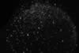

|
|
(For further information on spectroscopy, see:
http://speclab.cr.usgs.gov)
TITLE: Natrolite NMNH83380 Zeolite DESCRIPT
DOCUMENTATION_FORMAT: MINERAL
SAMPLE_ID: NMNH83380
MINERAL_TYPE: Tectosilicate
MINERAL: Natrolite (Zeolite group)
FORMULA: Na2Al2Si3O10*2H2O
FORMULA_HTML: Na2Al2Si3O10•2H2O
COLLECTION_LOCALITY: Nova Scotia, Canada
ORIGINAL_DONOR: Smithsonian
CURRENT_SAMPLE_LOCATION: USGS Reston, Virginia
ULTIMATE_SAMPLE_LOCATION: USGS Reston, Virginia
SAMPLE_DESCRIPTION:
IMAGE_OF_SAMPLE:

END_SAMPLE_DESCRIPTION.
XRD_ANALYSIS:
40 kV - 30 mA, 6.5-9.5 keV
File: natrolit.out, -.mdi
References: JCPDS #41-1355, Borg and Smith (1969) for natrolite
Found: Scolecite = natrolite; very weak reflections at 7.2, 3.55 Angstroms
Comment: Natrolite and scolecite are well crystallized. Extra reflections could be a trace of sheet silicate with a basal spacing of 7 or 14 Angstroms.
J.S. Huebner, J. Pickrell, T. Schaefer, written communication(USGS)
END_XRD_ANALYSIS.
COMPOSITIONAL_ANALYSIS_TYPE: None # XRF, EM(WDS), ICP(Trace), WChem
COMPOSITION_TRACE: None
COMPOSITION_DISCUSSION:
None
END_COMPOSITION_DISCUSSION.
MICROSCOPIC_EXAMINATION:
END_MICROSCOPIC_EXAMINATION.
SPECTROSCOPIC_DISCUSSION:
Spectral features are those of natrolite but diminished in strength by the presence of scolecite when compared to natrolite HS169.3B. G. Swayze
END_SPECTROSCOPIC_DISCUSSION.
SPECTRAL_PURITY: 1b2b3b4_ # 1= 0.2-3, 2= 1.5-6, 3= 6-25, 4= 20-150 microns
| LIB_SPECTRA_HED: | where | Wave Range | Av_Rs_Pwr | Comment |
|---|---|---|---|---|
| LIB_SPECTRA: | splib04a r 3428 | 0.2-3.0µm | 200 | g.s.= |
| LIB_SPECTRA: | splib05a r 4877 | 0.2-3.0µm | 200 | g.s.= |
| LIB_SPECTRA: | splib06a r 15659 | g.s.= | ||
| LIB_SPECTRA: | splib06a r 15671 | g.s.= |
{kind=link}